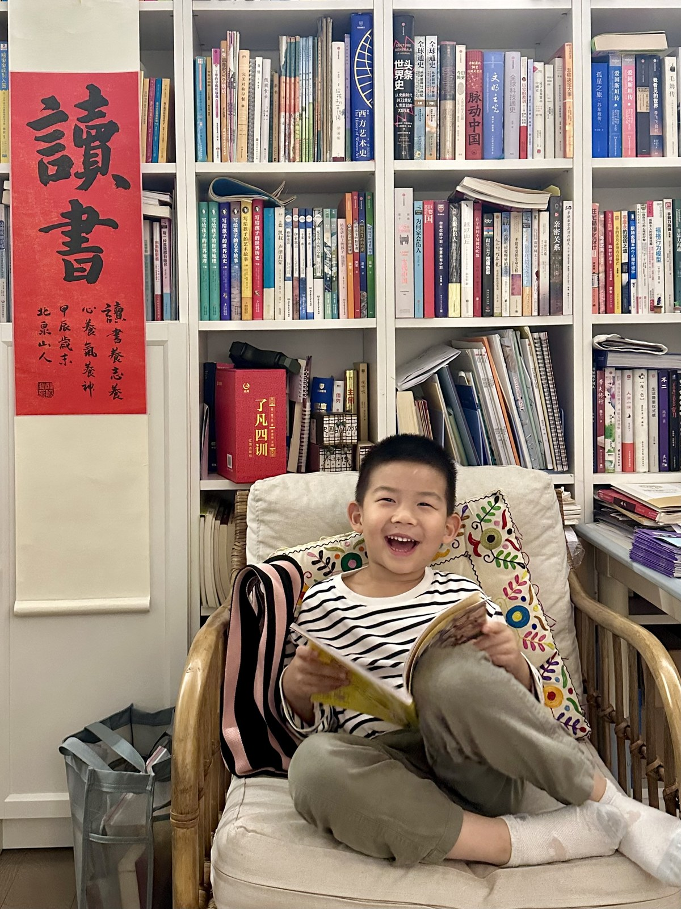

ONE DAY AT A TIME
2025 年 10 月 13 日
每一天都有自己的位置。
1 篇故事 · 2 张照片

洋芋在幼儿园当小标兵。
当小标兵的这一天小故事
当小标兵的这一天
2025年10月13日，洋芋在幼儿园当小标兵。
幼儿园每天会有两位小朋友值日，负责给入园的小朋友测量体温，帮大家洗手、消毒。
照片里，洋芋穿着红色的衣服，戴着蓝色绶带，拿着体温计给一位小朋友测体温。
洋芋从小班入园，如今已经读到大班，快要毕业了。看着他当小标兵的这些照片，我觉得他很自信。
到了晚上，洋芋坐在椅子上，手里摊着书，笑得很开心。
根据爸爸的讲述整理
读这个故事 →

到了晚上，洋芋坐在椅子上，手里摊着书，笑得很开心。
当小标兵的这一天